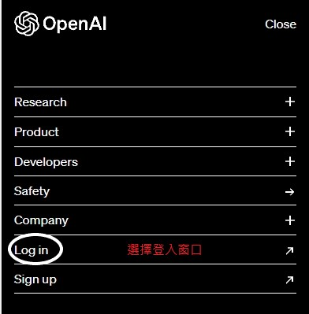
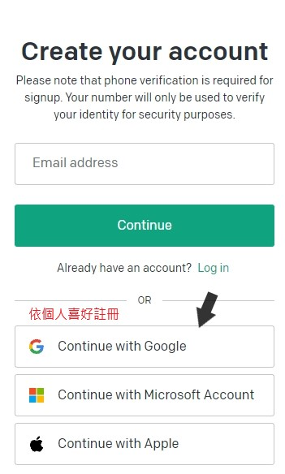
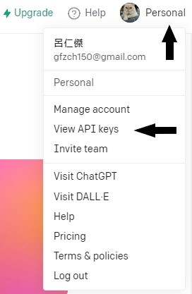
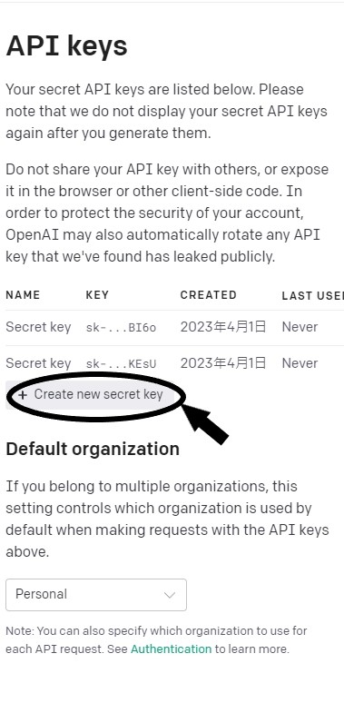
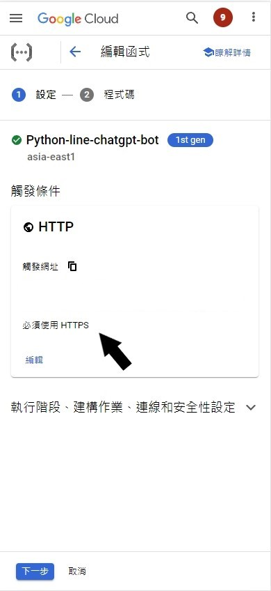
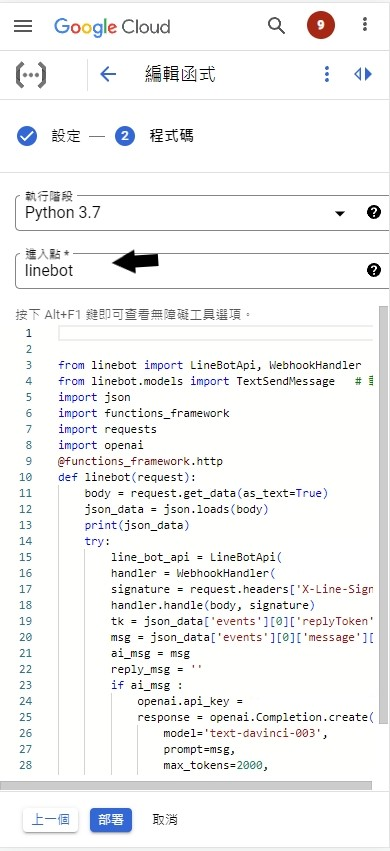
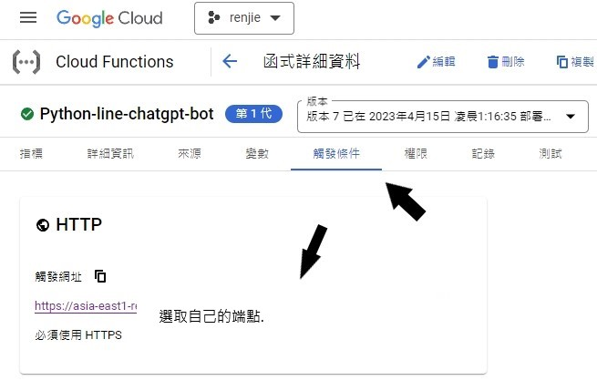
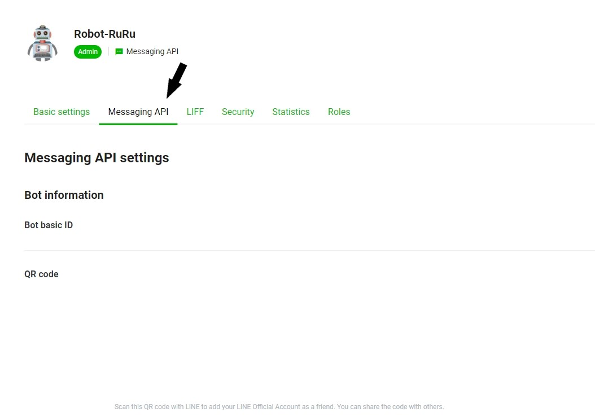
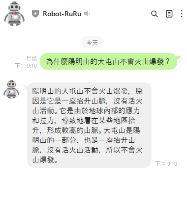

建立python line chatgpt
→step1，註冊Open AI
搜尋Open AI官方 : Open AI
 →step2，生成API keys
按下網頁右上角的Personal,並進去View API keys.
按下Create new secret key,並複製生成出的key.
→step3，google cloud建立函式,並選擇語言
附上要使用到的python-line-chatgpt
函式內的Channel access token和Channel secret只要更換成自己的即可.
→step4，設定需要匯入的模組.

→step5，設定函式的進入點.
→step5，完成部屬後,選擇觸發條件,並複製端點至LINE Develpers 的Webhook URL
→step6，最後到line developers更換端點.
選擇Messaging API,更換端點後並按下Update就大功告成.
→step7，測試結果.
